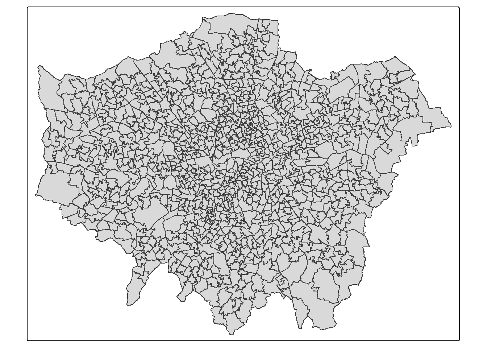
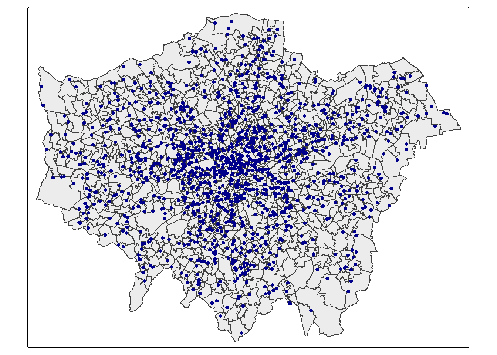
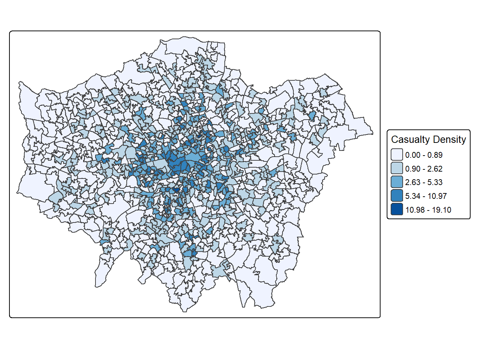
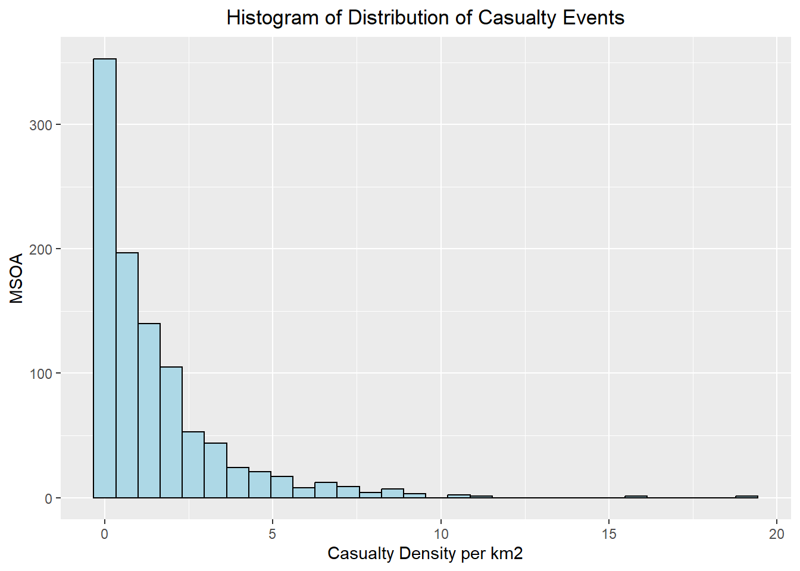
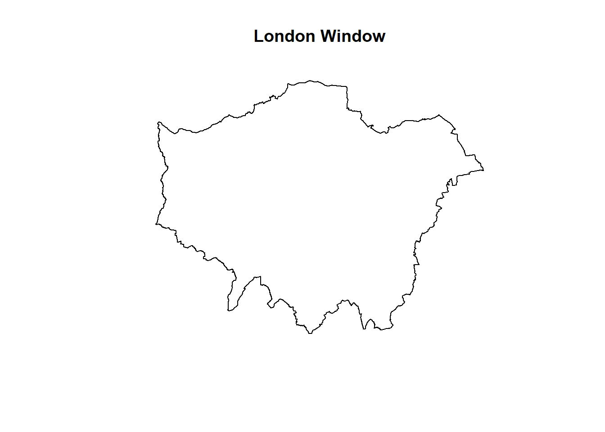
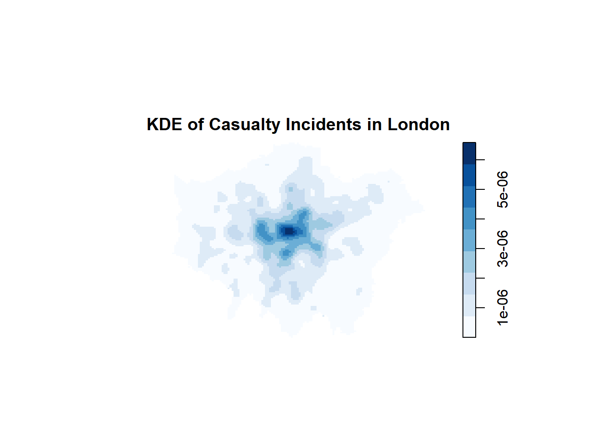
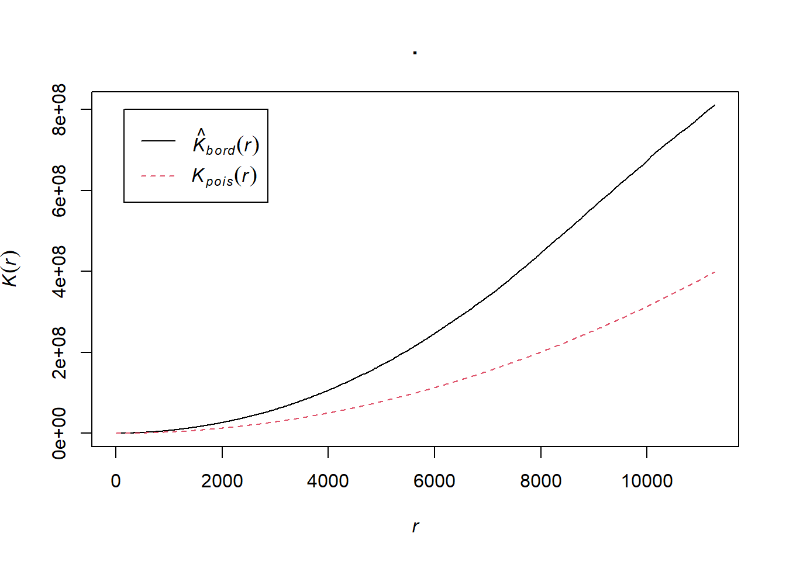
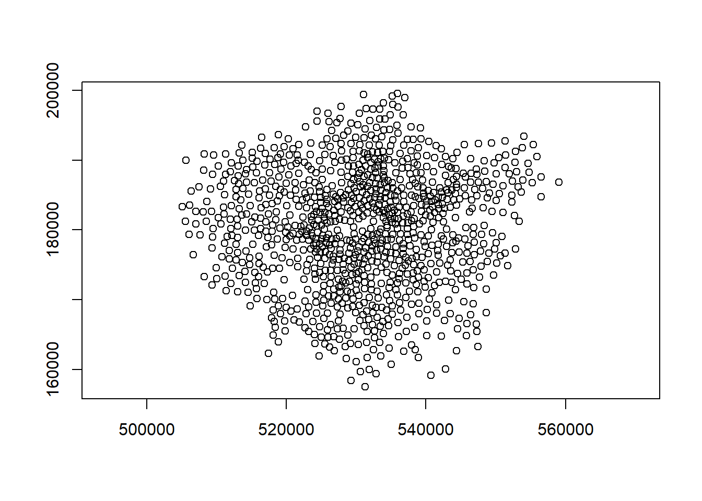
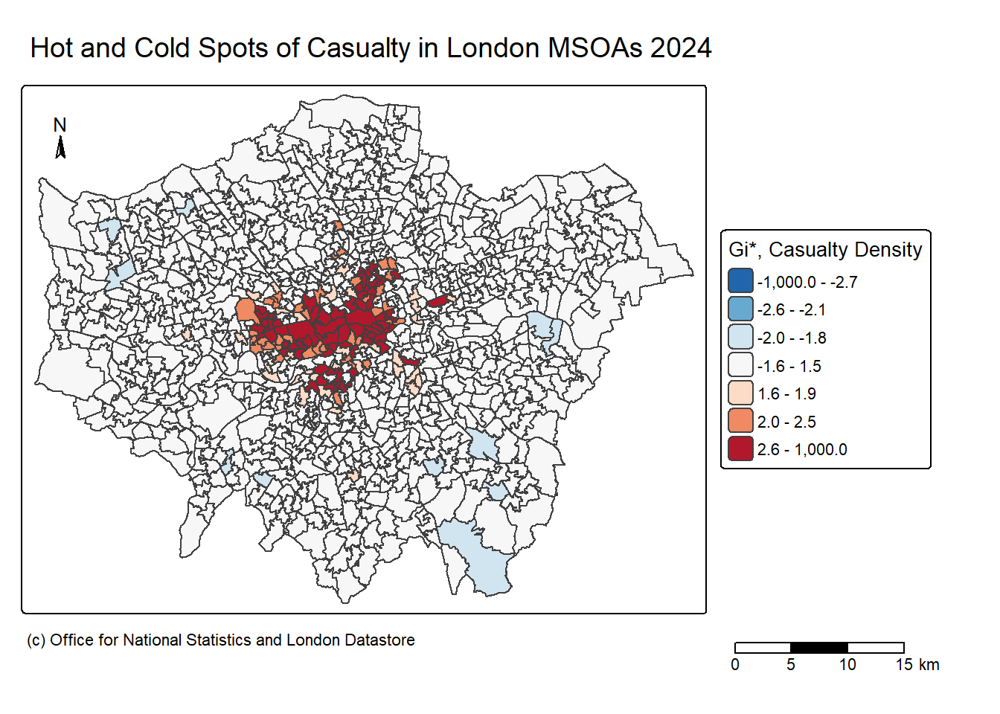

# remove objects from workspace and clear memory
rm(list = ls())
gc() used (Mb) gc trigger (Mb) max used (Mb)
Ncells 610234 32.6 1392492 74.4 702065 37.5
Vcells 1115855 8.6 8388608 64.0 1928291 14.8A Spatial Analysis of Hotspots Clustering Activities of Deaths and Injuries in London
This was submitted as part of the coursework for CASA0005 Geographic Information Systems and Science, MSc Urban Spatial Science at the Bartlett Centre for Advanced Spatial Analysis (CASA), University College London (UCL).
Transport for London aims to eliminate all deaths and serious injuries from London’s transport network by 2041. They have appointed you as a consultant to investigate and draw preliminary insight from their casualty data. You should use appropriate data processing and analysis methods to produce an overview report which summarises the patterns revealed in the data. It is expected that at least some of the methods you use will relate to the spatial dimensions of the data. Your report should include a brief introduction including relevant contextual information at the beginning and a critical review of your findings at the end. You must include at least one map.
The Vision Zero action plan 2018 is a Mayor’s Transport Strategy aiming to eliminate deaths and serious injuries on London’s transport networks by 2041, which included ambitions of safe speed, safe streets, safe vehicles, safe behaviour, etc (TfL, n.d.). Traffic accidents were found as a public problem as the second leading cause of death in major cities (Hazaymeh et.al, 2022). Recently, the publication of the Casualties in Greater London 2024 report had revealled that there is an increase in fatalities of 16% but accompanied with an overall very small reduction of killed or seriously injured compared to 2023 statistics (TfL, n.d.). It was also outlined in the report that incidents tends to happen within vulnerable road users including walking, cycling, and motorcycle as the modes of transport to account for 80 per cent of fatalities (TfL, n.d.). Therefore, this has positioned identifying spatial hotspots at locations that are associated with higher risks of severe incidents as crucial for understanding and target prevention measures effectively (TfL, n.d.). This analysis is aimed to provide actionable insights for planners and decision-makers to implementing safety measures at the identified “higher risk” hotspots as priorities for policy intervention. Furthermore, policy makers can further integrate and interpret hotspots and investigate the relationship with land uses of commercial, residential or industrial, for a more holistic view for targeted policy intervention purpose.
The following analysis will aim to answer the following research question: Which areas exhibit spatial hotspots clustering activity of deaths and serious injuries across London in 2024? The hypothesis for the analysis: Incidents causing deaths and injuries are not spatially random, and they do exhibit clustering in specific areas of London.
spatstat observation window; a reliable official boundary dataset for spatial analysis.sf object for spatial analysis, together with relevant casualty attributes.sf object for spatial analysis.Fatal and Serious).A histogram of casualty event counts will be used to examine the distribution, skewness and potential outliers before conducting spatial analysis. This is particularly relevant because casualty counts may be skewed and deviate from a normal distribution.
# remove objects from workspace and clear memory
rm(list = ls())
gc() used (Mb) gc trigger (Mb) max used (Mb)
Ncells 610234 32.6 1392492 74.4 702065 37.5
Vcells 1115855 8.6 8388608 64.0 1928291 14.8library(sf)
library(here)
library(tidyverse)
library(janitor)
library(tmap)
library(tmaptools)
library(ggplot2)
library(sp)
library(spdep)
library(spatstat)
library(RColorBrewer)This section will be reading in three data sets of London boundaries data, MSOA polygons data and raw Casualty CSV data. These data sets will be transformed to British National Grid EPSG:27700 for ensuring a consistent CRS projection across the three data sets. This will ensure accurate spatial alignment when conducting spatial joins.
#read in London GLA Boundary
london_gla <- st_read(here::here("TfL_vision_zero_data", "London_GLA_Boundary.shp"))%>%
#transform CRS to EPSG:27700 (meters)
st_transform(27700)Reading layer `London_GLA_Boundary' from data source
`C:\Users\choic\CASA\TfL-Vision-Zero\TfL_vision_zero_data\London_GLA_Boundary.shp'
using driver `ESRI Shapefile'
Simple feature collection with 1 feature and 4 fields
Geometry type: POLYGON
Dimension: XY
Bounding box: xmin: 503568.2 ymin: 155850.8 xmax: 561957.5 ymax: 200933.9
Projected CRS: OSGB36 / British National Grid#read in MSOA Boundary
london_msoa <- st_read(here::here("TfL_vision_zero_data", "Middle_layer_Super_Output_Areas_December_2021_Boundaries_EW_BFE_V8", "MSOA_2021_EW_BFE_V8.shp"))%>%
#transform CRS to EPSG:27700 (meters)
st_transform(27700)Reading layer `MSOA_2021_EW_BFE_V8' from data source
`C:\Users\choic\CASA\TfL-Vision-Zero\TfL_vision_zero_data\Middle_layer_Super_Output_Areas_December_2021_Boundaries_EW_BFE_V8\MSOA_2021_EW_BFE_V8.shp'
using driver `ESRI Shapefile'
Simple feature collection with 7264 features and 8 fields
Geometry type: MULTIPOLYGON
Dimension: XY
Bounding box: xmin: 82643.12 ymin: 5333.81 xmax: 655989 ymax: 657600.4
Projected CRS: OSGB36 / British National Grid#read in CSV
casualty <- read_csv(here::here("TfL_vision_zero_data", "jan-dec-2024-gla-data-extract-casualty.csv"))%>%
st_as_sf(., coords = c("Easting", "Northing"),
#CRS in EPSG:27700 (meters)
crs = 27700)#check if all CRS is the same and projected to EPSG:27700
st_crs(london_gla)Coordinate Reference System:
User input: EPSG:27700
wkt:
PROJCRS["OSGB36 / British National Grid",
BASEGEOGCRS["OSGB36",
DATUM["Ordnance Survey of Great Britain 1936",
ELLIPSOID["Airy 1830",6377563.396,299.3249646,
LENGTHUNIT["metre",1]]],
PRIMEM["Greenwich",0,
ANGLEUNIT["degree",0.0174532925199433]],
ID["EPSG",4277]],
CONVERSION["British National Grid",
METHOD["Transverse Mercator",
ID["EPSG",9807]],
PARAMETER["Latitude of natural origin",49,
ANGLEUNIT["degree",0.0174532925199433],
ID["EPSG",8801]],
PARAMETER["Longitude of natural origin",-2,
ANGLEUNIT["degree",0.0174532925199433],
ID["EPSG",8802]],
PARAMETER["Scale factor at natural origin",0.9996012717,
SCALEUNIT["unity",1],
ID["EPSG",8805]],
PARAMETER["False easting",400000,
LENGTHUNIT["metre",1],
ID["EPSG",8806]],
PARAMETER["False northing",-100000,
LENGTHUNIT["metre",1],
ID["EPSG",8807]]],
CS[Cartesian,2],
AXIS["(E)",east,
ORDER[1],
LENGTHUNIT["metre",1]],
AXIS["(N)",north,
ORDER[2],
LENGTHUNIT["metre",1]],
USAGE[
SCOPE["Engineering survey, topographic mapping."],
AREA["United Kingdom (UK) - offshore to boundary of UKCS within 49°45'N to 61°N and 9°W to 2°E; onshore Great Britain (England, Wales and Scotland). Isle of Man onshore."],
BBOX[49.75,-9.01,61.01,2.01]],
ID["EPSG",27700]]st_crs(london_msoa)Coordinate Reference System:
User input: EPSG:27700
wkt:
PROJCRS["OSGB36 / British National Grid",
BASEGEOGCRS["OSGB36",
DATUM["Ordnance Survey of Great Britain 1936",
ELLIPSOID["Airy 1830",6377563.396,299.3249646,
LENGTHUNIT["metre",1]]],
PRIMEM["Greenwich",0,
ANGLEUNIT["degree",0.0174532925199433]],
ID["EPSG",4277]],
CONVERSION["British National Grid",
METHOD["Transverse Mercator",
ID["EPSG",9807]],
PARAMETER["Latitude of natural origin",49,
ANGLEUNIT["degree",0.0174532925199433],
ID["EPSG",8801]],
PARAMETER["Longitude of natural origin",-2,
ANGLEUNIT["degree",0.0174532925199433],
ID["EPSG",8802]],
PARAMETER["Scale factor at natural origin",0.9996012717,
SCALEUNIT["unity",1],
ID["EPSG",8805]],
PARAMETER["False easting",400000,
LENGTHUNIT["metre",1],
ID["EPSG",8806]],
PARAMETER["False northing",-100000,
LENGTHUNIT["metre",1],
ID["EPSG",8807]]],
CS[Cartesian,2],
AXIS["(E)",east,
ORDER[1],
LENGTHUNIT["metre",1]],
AXIS["(N)",north,
ORDER[2],
LENGTHUNIT["metre",1]],
USAGE[
SCOPE["Engineering survey, topographic mapping."],
AREA["United Kingdom (UK) - offshore to boundary of UKCS within 49°45'N to 61°N and 9°W to 2°E; onshore Great Britain (England, Wales and Scotland). Isle of Man onshore."],
BBOX[49.75,-9.01,61.01,2.01]],
ID["EPSG",27700]]st_crs(casualty)Coordinate Reference System:
User input: EPSG:27700
wkt:
PROJCRS["OSGB36 / British National Grid",
BASEGEOGCRS["OSGB36",
DATUM["Ordnance Survey of Great Britain 1936",
ELLIPSOID["Airy 1830",6377563.396,299.3249646,
LENGTHUNIT["metre",1]]],
PRIMEM["Greenwich",0,
ANGLEUNIT["degree",0.0174532925199433]],
ID["EPSG",4277]],
CONVERSION["British National Grid",
METHOD["Transverse Mercator",
ID["EPSG",9807]],
PARAMETER["Latitude of natural origin",49,
ANGLEUNIT["degree",0.0174532925199433],
ID["EPSG",8801]],
PARAMETER["Longitude of natural origin",-2,
ANGLEUNIT["degree",0.0174532925199433],
ID["EPSG",8802]],
PARAMETER["Scale factor at natural origin",0.9996012717,
SCALEUNIT["unity",1],
ID["EPSG",8805]],
PARAMETER["False easting",400000,
LENGTHUNIT["metre",1],
ID["EPSG",8806]],
PARAMETER["False northing",-100000,
LENGTHUNIT["metre",1],
ID["EPSG",8807]]],
CS[Cartesian,2],
AXIS["(E)",east,
ORDER[1],
LENGTHUNIT["metre",1]],
AXIS["(N)",north,
ORDER[2],
LENGTHUNIT["metre",1]],
USAGE[
SCOPE["Engineering survey, topographic mapping."],
AREA["United Kingdom (UK) - offshore to boundary of UKCS within 49°45'N to 61°N and 9°W to 2°E; onshore Great Britain (England, Wales and Scotland). Isle of Man onshore."],
BBOX[49.75,-9.01,61.01,2.01]],
ID["EPSG",27700]]The MSOA data set covered the whole of England, which is too large for our study area London. To narrow down our focus to London only, the following will spatial subset MSOA units to London boundaries.
#centroids of MSOAs across UK
MSOAs_centroids <- st_centroid(london_msoa)
#centroids within the London boundary. London is an sf object of the Greater London boundary
lon_msoa <- london_msoa[st_within(MSOAs_centroids, london_gla, sparse = FALSE), ]#quick plot map for initial inspection of the MSOA boundaries in London GLA
qtm(lon_msoa)
To align with the research scope, firstly certain columns will be retained. Collision_id, casualty_count, casualty gender and casualty_age_5_year_bands will be retained that may be needed for later analysis. As our analysis is focused on the year 2024 only, ensuring the time period for 2024 exclusively required the column for collision_date to be present and filtered within data cleaning. For casualty_severity column, “slight” injuries would be excluded from this analysis as our focus is for “fatal” deaths and “serious” injuries only. Minor injuries explained as “slight” is likely to distort our analysis as minor incidents often to happen more commonly and are more likely to be random distributed.
#clean casualty
casualty_clean <- casualty %>%
clean_names() %>%
#selected columns needed for analysis
select(collision_id, collision_date, casualty_severity, casualty_count, casualty_gender, casualty_age_5_year_bands, geometry) %>%
#make sure dates are filtered within 2024 only (Stack Overflow, n.d.)
mutate(collision_date = as.Date(collision_date, format = "%m/%d/%Y")) %>%
filter(collision_date >= "2024-01-01",
collision_date <= "2024-12-31",
#filter for severity categories of fatal(deaths) and serious(serious injuries) only
casualty_severity %in% c("Fatal","Serious"))
#check if the column casualty_severity only contains Fatal and Serious
unique(casualty_clean$casualty_severity)[1] "Serious" "Fatal" #clean london msoa
lon_msoa_clean <- lon_msoa %>%
clean_names()%>%
select(msoa21cd, msoa21nm, geometry)Plot a map to check if the cleaned casualty data points are aligned correctly within the London GLA boundaries data, making sure no points lie outside of the boundaries.
#plot both layers for data inspection before spatial joins
tmap_mode("plot")
tm_shape(lon_msoa_clean) +
tm_polygons(fill_alpha = 0.5) +
tm_shape(casualty_clean) +
tm_dots(fill = "darkblue", size = 0.3)
Firstly, spatial joins will be conducted to calculate number of counts of casualty incidents within London in 2024. Secondly, as MSOAs varies in size, a larger MSOAs will tend to show higher counts of casualty incidents. Therefore, this section calculates casualty incidents density. As the map units are in meters, for easier interpretation density calculations will be multiplied by 100000 to show units in kilometer squared instead.
#point polygon aggregation
points_sf_joined <- lon_msoa_clean %>%
mutate(n = lengths(st_intersects(., casualty_clean))) %>%
janitor::clean_names() %>%
#calculate area
mutate(area=st_area(.)) %>%
#calculate density per kilometers squared (*1000000)
mutate(density=(n/area)* 1000000) %>%
#select density and other variables
select(density, msoa21cd, msoa21nm, n)#plot a quick choropleth map for checks
tm_shape(points_sf_joined) +
tm_polygons(
fill = "density",
fill.scale = tm_scale_intervals(
values = "brewer.blues",
style="jenks"),
fill.legend = tm_legend(title="Casualty Density",
title.size=0.85,
size=0.8,
position=tm_pos_out("right",
"center",
pos.v = "center")))
This section will apply exploratory and spatial methods to explore how casualty incidents in London were distributed in 2024. It will start off with a basic overview distribution of incidents events, followed by point pattern analysis and spatial autocorrelation methods to identify areas which eviction activities are most spatially concentrated.
#distribution of casualty events
points_sf_joined %>%
st_drop_geometry() %>%
mutate(density = as.numeric(density)) %>%
filter(!is.na(density)) %>%
ggplot(aes(x = density)) +
geom_histogram(color="black",
fill="lightblue",
bins = 30) +
labs(
title = "Histogram of Distribution of Casualty Events",
x = "Casualty Density per km2",
y = "MSOA"
)+
theme(plot.title = element_text(hjust = 0.5))
The above histograms showed the frequency distribution of casualty density (fatal and serious) per squared kilometer across London MSOAs, exhibiting a strong positive skew (right-skewed) distribution. The tallest bar indicated that most MSOAs have very low or nearly 0 rates of casualty density. On the other end, the long tail on the right highlighted the presence of spatial outliers, where small numbers of MSOAs experiences high intensities of casualty incidents. This not normal distribution have suggested that casualty incidents are not randomly spatial distributed, therefore further exploration would follow to understand where these outliers of high-rate concentrations occur.
To get an initial understanding of concentrations of casualty incidents, point pattern will provide a visual inspection on a continuous surface with a bandwidth of 1km.
#create a tract window
london_window <- as.owin(london_gla)
plot(london_window, main = "London Window")
#sf -> sp
casualty_sp <- casualty_clean %>%
as(.,"Spatial")
#create a spatstat ppp object
casualty.ppp <- ppp(x=casualty_sp@coords[,1],
y=casualty_sp@coords[,2],
window=london_window)#plot Kernel Density Estimation
casualty_kde <- casualty.ppp %>%
#banwidth set for sigma 1000 --> 1km
density(., sigma = 1000)
plot(casualty_kde,
main = "KDE of Casualty Incidents in London",
col = brewer.pal(9, "Blues")) 
Applying Kernel Density Estimation with a sigma level of 1000 (1 km) bandwidth to casualty incidents have shown that there is a few accidents concentration areas within London in 2024. The observations suggests that casualty incidents tends to be spatially concentrated in certain areas of London rather than evenly distributed across the whole city, which leads to further statistical verification to be confirmed with Ripley’s K test next:
#ripley k plot
K <- casualty.ppp %>%
Kest(., correction="border") %>%
plot()
The above Ripley’s K test plot tested the point patterns in comparison with complete spatial randomness (CSR). It hasS statistically confirmed that casualty incidents are spatially clustered and not randomly distributed, as value of the black line K that falls above the red dotted line, where data appeared to be clustered at its corresponding distance. Next, spatial autocorrelation methods will be implied to find hotspots to indentify areas for priorities for Vision Zero interventions
To quantify clustering of casualty incidents within the MSOAs of London, neighbours are defined with the Queen’s contiguity matrix with row standardised weights. This is used to include all points that share common features (share common corners or boundary) inclusively, as roads and highways infrastructure tends to span across MSOAs. The spatial weight matrix will be created before testing Moran’s I clustering.
#calculate centroids
londonw <- points_sf_joined%>%
st_centroid()%>%
st_geometry()
#visualisation of centroids
plot(londonw,axes=TRUE)
#create a neighbours list
londonw_nb <- points_sf_joined %>%
#poly2nb --> find which MSOA touch each other
poly2nb(., queen=T)#create spatial weight matrix from these weights
londonw_nb_queens <- londonw_nb %>%
nb2listw(., style="W",
#allow districts with no neighbours
#London have River Thames crossing in the middle!!
zero.policy = TRUE)#run Moran's I
morantest <- moran.test(
as.numeric(points_sf_joined$density),
londonw_nb_queens)
morantest
Moran I test under randomisation
data: as.numeric(points_sf_joined$density)
weights: londonw_nb_queens
Moran I statistic standard deviate = 13.174, p-value < 2.2e-16
alternative hypothesis: greater
sample estimates:
Moran I statistic Expectation Variance
0.2429979329 -0.0009990010 0.0003430537 The above Moran’s I queen’s case test have shown strong positive clustering with a statistic value of 0.24, suggesting MSOAs with high casualty density tend to be located near other areas also with high casualty density, and low-density near other low-density. The expectation value of -0.001 is close to zero, indicating positive spatial autocorrelation. The p-value is strictly less than 0.05 threshold, signalling statistically significance to reject the hypothesis. Overall, the Moran’s I test had evident that casualty density is not randomly distributed, but spatially clustered across London MSOAs. This result justifies the next step in proceeding to the Getis Ord Gi* analysis to locate these specific “hotspots” and “coldspots” clusters.
Lastly, to identify significant clustering of hotspots and coldspots, the Getis Ord Gi* calculation is used in the following.
#local Getis-Ord Gi* for casualty density
Gi_casualty_local_density <- points_sf_joined %>%
pull(density) %>%
as.vector() %>%
localG(., londonw_nb_queens)
head(Gi_casualty_local_density)[1] 5.5683244 -1.1489873 -0.4964278 -1.4486092 -1.0774737 -1.0503064#add to sf
casualty_density <- points_sf_joined %>%
mutate(density_G = as.numeric(Gi_casualty_local_density))#set breaks
breaks1<-c(-1000,-2.58,-1.96,-1.65,1.65,1.96,2.58,1000)
#create a new diverging colour brewer palette and reverse the order so higher values correspond to red
MoranColours<- rev(brewer.pal(7, "RdBu"))#plot map
tm_shape(casualty_density) +
tm_polygons(
fill = "density_G",
fill.scale = tm_scale_intervals(
values = MoranColours,
midpoint = NA,
style = "fixed",
breaks = breaks1
),
fill.legend = tm_legend(
title = "Gi*, Casualty Density",
title.size = 0.85,
size = 0.8,
position = tm_pos_out("right",
"center",
pos.v = "center"))) +
#Compass
tm_compass(
type = "arrow", size = 1,
position = tm_pos_in("left", "top")) +
#Scale Bar
tm_scalebar(
text.size = 0.7,
position = tm_pos_out("right", "bottom")) +
#Credits
tm_credits(
"(c) Office for National Statistics and London Datastore",
size = 0.7,
position = tm_pos_out("center", "bottom")) +
#Title
tm_title("Hot and Cold Spots of Casualty in London MSOAs 2024")
The above Getis Ord Gi* map have identified the hotspots and cold spots of death and serious injuries across London. The red areas of hotspots showed high casualty densities while the blue areas of coldspots showed relatively low casualty incidents. Visually, the map have indicated that central London areas involved a concentration of hotspots, likely to be suggesting boroughs of Westminster, Camden, Islington, etc. These areas may reflect higher exposure to commercial and residential activities, causing higher pedestrian and traffic flows across London, increasing risks of traffic incidents. In contrast, north-west, east and south-eastern London tends to experience lowest casualty density across London. These hotspot and coldspots patterns answers the research question spatially, highlighting areas that should be targeted for incidents-prevention policy interventions priorities.
To conclude, casualty incidents are spatially clustered across London in 2024. The distribution of deaths and serious injuries rates are positively right skewed, indicating casualties are concentrated in specific areas in London. The point pattern analysis have supported the findings with spatial autocorrelation tests proving the spatial clustering additionally. The analysis found that casualty tends to concentrate within central London areas, suggesting these areas to be specifically targeted for safety intervention policy measures, to achieve its “Safe System” ambitions.
The study time period has limited data usage for the year of 2024 only, it may not be a whole reflection and representation of the overall pattern across London, limitations to fully understand the incidents patterns within a longer time frame.
One limitations of highlighting the local hotspots and coldspots is that the identification of hotspots aims to reflect to areas where incidents rates are highest in clustering activity, but it should not be precieved as hazardous areas for transport.
As our results showed higher rates of severe incidents within central London, on a behavioural perspective, higher density urban environments may cause people to be more prone to stress and sensitivity. These may be one of the causes for higher incidents rates within central areas. This positioned BIG FIVE personality traits to be pne of the factors for consideration for future research directions.
Hazaymeh, K., Almagbile, A. and Alomari, A.H. (2022). Spatiotemporal Analysis of Traffic Accidents Hotspots Based on Geospatial Techniques. ISPRS International Journal of Geo-Information, [online] 11(4), p.260. doi:https://doi.org/10.3390/ijgi11040260.
Road safety factsheet Casualties in Greater London during 2024. (n.d.). Available at: https://tfl.gov.uk/cdn/static/cms/documents/casualties-in-greater-london-2024.pdf [Accessed 12 Dec. 2025].
Matters, T. for L. | E.J. (n.d.). Vision Zero for London. [online] Transport for London. Available at: https://tfl.gov.uk/corporate/safety-and-security/road-safety/vision-zero-for-london.
www.london.gov.uk. (n.d.). Vision Zero for London | London City Hall. [online] Available at: https://www.london.gov.uk/programmes-strategies/transport/improving-londons-roads/vision-zero-london.
Stack Overflow. (n.d.). Changing date format in R. [online] Available at: https://stackoverflow.com/questions/7439977/changing-date-format-in-r.